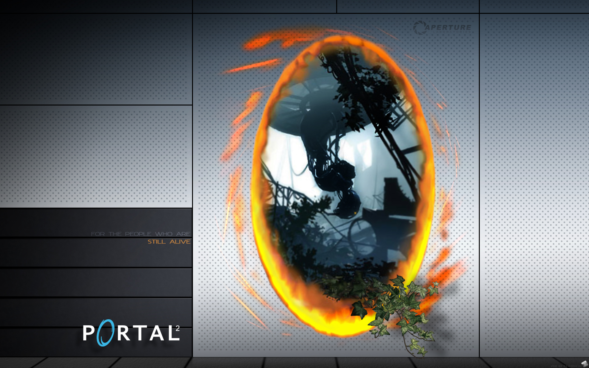

Stardew Valley
Stardew Valley es un juego de rol de simulación de granja desarrollado por ConcernedApe. Los jugadores heredan una vieja granja y deben trabajar para restaurarla, cultivar cultivos, criar animales, pescar y participar en la vida del pueblo. El juego ofrece una experiencia relajante y adictiva en un entorno pixelado encantador.
.jpg)
Divinity: Original Sin 2
Divinity: Original Sin 2 es un juego de rol desarrollado por Larian Studios. Ofrece una experiencia de rol profunda y compleja con una narrativa rica y decisiones significativas. Los jugadores pueden crear y personalizar a sus personajes, explorar un mundo abierto, combatir en emocionantes batallas tácticas por turnos y participar en un modo cooperativo con hasta 4 jugadores.

Portal 2
Portal 2 es un juego de rompecabezas y acción en primera persona desarrollado por Valve. Combina ingeniosos desafíos de lógica y física con una narrativa humorística. Los jugadores controlan a Chell, quien debe resolver puzzles utilizando un dispositivo que crea portales interdimensionales. El juego incluye un modo cooperativo adicional con puzzles diseñados específicamente para dos jugadores.
